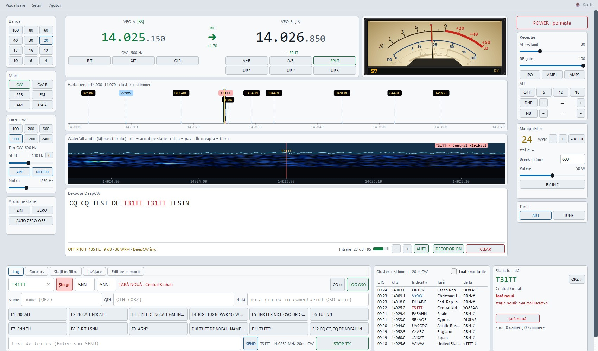

YO2CR CW 2.7 gata de descărcatready to download
Program de telegrafie pentru Windows, cu decodor neural, cluster și log.
A CW program for Windows, with a neural decoder, cluster and log.
- Decodor DeepCW (rețea neurală): citește CW-ul și când semnalul e slab sau manipularea e de mână.
- Comandă stația prin CAT (Hamlib inclus): VFO A/B, split, filtre, RIT/XIT, ATT, NB, DNR, APF, NOTCH, ATU.
- Moduri CW, CW-R, SSB, FM și DATA, cu JTDX, JTDX_contest sau WSJT-X la alegere.
- Cluster filtrat după modul în care ești, cu hartă a benzii și cascadă audio. Un clic pe spot și split-ul se pune singur.
- Memorii F1–F12, log ADIF, trimitere în Log4OM, mod concurs, QRZ.
- Îți arată dacă țara e nouă, neconfirmată sau confirmată, și te anunță când n-ai mai descărcat confirmările LoTW.
- Nou în 2.7: decodor DeepCW îmbunătățit, antrenat de YO2CR pe semnale reale de bandă: în teste, cu o treime mai puține litere greșite (de la 44% la 29%) și de 3–4 ori mai puține pe semnale bune; găsește mai multe indicative. Cu acordul tău, programul poate trimite automat, anonim, exemple care îl fac și mai bun.
- Din 2.5: CW prin CAT pentru stațiile cu un singur port USB (Icom IC-7300, IC-705, IC-9700): nu mai trebuie al doilea port.
- Din 2.4: meniuri și în engleză, găsește singur porturile stației (Yaesu), caută stația după nume (ex. „746 pro”), mesaje clare la CAT, decodor DeepCW reantrenat, cu mai puține greșeli.
- Din 2.3: se actualizează singur (verifică o dată pe zi și instalează la un clic), banda cu textul transmis.
- DeepCW decoder (neural network): reads CW even when the signal is weak or the keying is by hand.
- Controls the radio over CAT (Hamlib included): VFO A/B, split, filters, RIT/XIT, ATT, NB, DNR, APF, NOTCH, ATU.
- CW, CW-R, SSB, FM and DATA modes, with your choice of JTDX, JTDX_contest or WSJT-X.
- Cluster filtered by your current mode, with a band map and audio waterfall. Click a spot and split is set for you.
- F1–F12 memories, ADIF log, sending to Log4OM, contest mode, QRZ.
- Shows whether a country is new, unconfirmed or confirmed, and reminds you when your LoTW confirmations are out of date.
- New in 2.7: improved DeepCW decoder, trained by YO2CR on real band signals: in tests about a third fewer wrong letters (from 44% to 29%) and 3–4 times fewer on good signals; finds more callsigns. With your consent the program can send anonymous examples automatically to make it even better.
- Since 2.5: CW via CAT for radios with a single USB port (Icom IC-7300, IC-705, IC-9700): no second port needed.
- Since 2.4: English menus, finds the radio's COM ports by itself (Yaesu), radio search by name (e.g. “746 pro”), clear CAT messages, retrained DeepCW decoder with fewer errors.
- Since 2.3: updates itself (checks once a day, installs with one click), a band showing the text being sent.
Kitul conține opțional JTDX_contest (licență GPL v3; autorii și sursa sunt în NOTITE-TERTI.txt). Cum îl instalezi →
The installer optionally includes JTDX_contest (GPL v3 licence; authors and source are listed in NOTITE-TERTI.txt). How to install →
Cerințe PC: Windows 10 / 11 pe 64 de biți; procesor Intel Core i3 / i5 / i7 (din cca. 2010) sau AMD (din 2011) – pe Celeron / Pentium / Core 2 mai vechi nu pornește; 4 GB RAM (recomandat 8 GB); cca. 1 GB pe disc; placa de sunet a stației și cablul CAT / USB. Dacă decodorul rămâne la „decodorul pornește…”, instalați Microsoft Visual C++ Redistributable x64.
PC requirements: Windows 10 / 11 64-bit; Intel Core i3 / i5 / i7 (about 2010 or newer) or AMD (2011 or newer) – it does not start on older Celeron / Pentium / Core 2; 4 GB RAM (8 GB recommended); about 1 GB of disk; the radio's sound card and the CAT / USB cable. If the decoder stays at „decodorul pornește…”, install Microsoft Visual C++ Redistributable x64.
În versiunea următoare: componenta Microsoft inclusă direct în kit, mesaj clar dacă procesorul e prea vechi sau decodorul nu poate porni, corecturi la vremea {WX} și la pornirea Log4OM, mesaje traduse complet în engleză și sfaturi noi în manual (QRP Labs QMX, PC KEYING la FTDX-10, Log4OM și JTDX).
Coming in the next version: the Microsoft component included in the kit, a clear message when the processor is too old or the decoder cannot start, fixes for the {WX} weather and the Log4OM start, all messages translated to English and new tips in the manual (QRP Labs QMX, FTDX-10 PC KEYING, Log4OM and JTDX).
De ce ai nevoie
What you need
- Windows 10 sau 11, pe 64 de biți
- o stație cu CAT suportat de Hamlib (Yaesu, Icom, Kenwood…)
- sunetul stației intrat în PC (placa de sunet a stației sau o interfață)
- ~1 GB loc pe disc
- Windows 10 or 11, 64-bit
- a radio with CAT supported by Hamlib (Yaesu, Icom, Kenwood…)
- the radio's audio into the PC (the radio's USB sound card or an interface)
- ~1 GB of disk space
Licență
Licence
Freeware: gratuit pentru radioamatori. Nu se vinde și nu se modifică.
Freeware: free for radio amateurs. Not to be sold or modified.